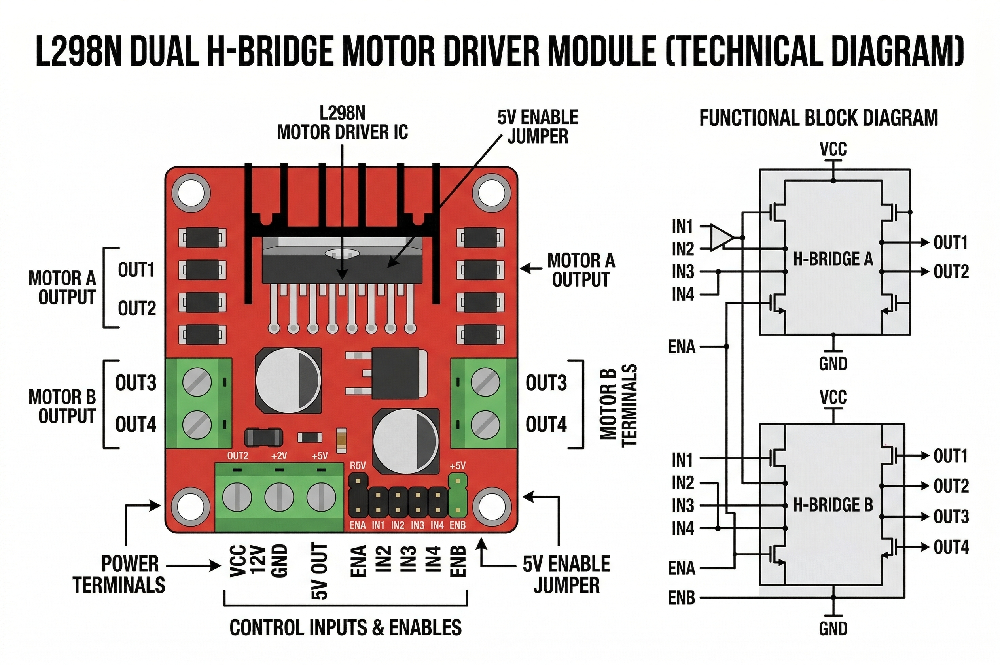

The L298N is a high-power dual Hnd-bridge motor driver module used to control the direction and speed of two DC motors (or one stepper motor) simultaneously. It can handle currents up to 2A per channel.

The L298N acts as an electrical bridge between your low-power Arduino and your high-power motors:
| Pin | Function |
|---|---|
| ENA | Enable Motor A (Needs PWM for speed control) |
| IN1, IN2 | Control Motor A direction (High/Low) |
| IN3, IN4 | Control Motor B direction (High/Low) |
| ENB | Enable Motor B (Needs PWM for speed control) |
| Terminal Block | Function |
|---|---|
| VMS (+12V) | External Motor Power (up to 35V) |
| GND | Common Ground (Connect to Arduino GND too!) |
| +5V | 5V Output (if onboard regulator is enabled) |
| OUT1, OUT2 | Connect to Motor A |
| OUT3, OUT4 | Connect to Motor B |
In the OpenHW Studio emulator, the L298N will process signals from your Arduino pins (D9, D8, D7 etc.) and drive any attached Motors in real-time. Make sure to ground the GND terminal to the Arduino GND symbol for proper logic levels!
Controlling a single motor (Motor A) using the L298N:
// Motor A Pins
int enA = 9;
int in1 = 8;
int in2 = 7;
void setup() {
pinMode(enA, OUTPUT);
pinMode(in1, OUTPUT);
pinMode(in2, OUTPUT);
}
void loop() {
// Rotate Motor A Clockwise
digitalWrite(in1, HIGH);
digitalWrite(in2, LOW);
analogWrite(enA, 200); // Speed 0-255
delay(2000);
// Stop Motor A
digitalWrite(in1, LOW);
digitalWrite(in2, LOW);
delay(1000);
// Rotate Motor A Anti-Clockwise
digitalWrite(in1, LOW);
digitalWrite(in2, HIGH);
analogWrite(enA, 255); // Max Speed
delay(2000);
}